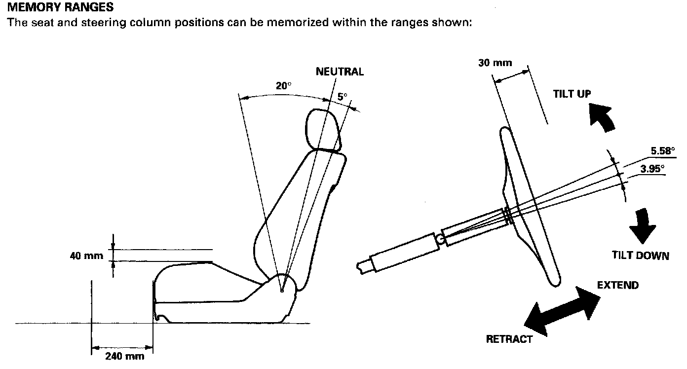

Driving Position Memory System (DPMS))
Driving Position Memory System (DPMS)Description
The power driver's seat and steering column, whose positions determine the driver's position, have a memory feature. The three seat adjustments (back and forth, up and down, seat back angle) and the two steering column adjustments (extend and retract, and steering column angle) can be regulated separately. All five adjustments can be memorized by pressing the MEMO button on the driving position memory switch, and then (within five seconds) pressing one of the two position buttons. Pressing the appropriate position button will move the seat and the steering column to the position memorized for driver 1 or driver 2, eliminating manual seat and steering column adjustment when changing drivers.
NOTE: Disconnecting the battery for more than 30 seconds will cancel the memorized positions.
MEMORY RANGES
The seat and steering column positions can be memorized within the ranges shown:

POWER SEAT MOTOR SENSORS
Each motor has a reed switch sensor which detects motor rotation and sends a pulse to the driving position memory system (DPMS} control unit when the motor rotates. The DPMS control unit stores the number of pulses in its memory, and the seat position is memorized.
^ The recline motor sensor produces one pulse for every 0.12 degrees of seat movement.
^ The slide motor sensor produces one pulse for every 0.14 mm of seat movement.
^ The front and rear up-down motor sensors produce one pulse for every 0.1 mmof seat movement.
STEERING COLUMN SENSORS
By means of the variable resistor-type tilt sensor and extend-retract sensor, the DPMS control unit detects the voltage changes caused by the movements of the steering column. These voltage changes are stored in memory, and the steering column position is memorized.
MEMORY RETRIEVAL
Pushing one of two position buttons on the driving position memory switch retrieves a memorized seat-and-steering column position. This function is disabled at speeds above 6 mph (10 km/h).
"AUTO" SWITCH FUNCTION
When the ignition key is pulled out (ignition switch turned OFF) with the AUTO switch (in the steering column switch assembly) ON and the car parked (shift lever in the steering column will automatically move to the highest tilt position and fully retracted position to ease exit from the car.